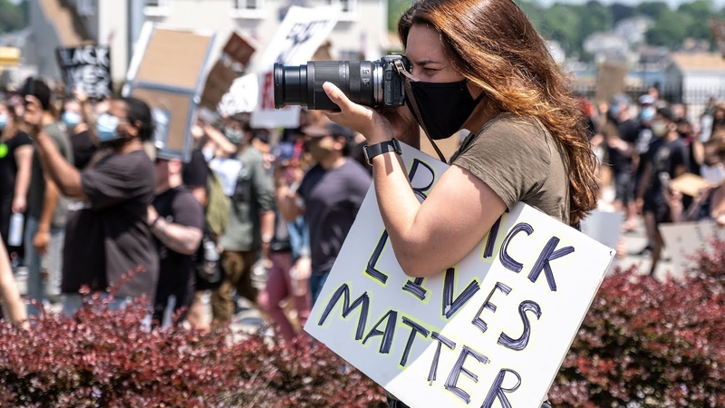

Know Your Rights:
Demonstrations
National Lawyers Guild
Elon Law School
11 April 2024
Disclaimer
This is a general overview of issues that may arise in political demonstrations. The information presented is not offered or intended as legal advice.
Freedom of Speech & Assembly
1st Amendment
Congress shall make no law … abridging the freedom of speech … or the right of the people peaceably to assemble, and to petition the Government for a redress of grievances.
1st Amendment: Scope
The 1st Amendment protects against restraints on speech and assembly by government action.
1st Amendment: Effect
Government may not prohibit, restrain, limit, or punish protected 1st Amendment speech or assembly based on the content or subject of the expression, the viewpoint expressed, or the political affiliation or association of the speaker/participants.
1st Amendment: Speech
Protected speech includes both verbal and non-verbal expression.
Body Language

Clothing

Conduct

1st Amendment: Public Forum
1st Amendment protections are strongest in places traditionally open to unrestricted public speech & activity.
Public Forum
- Sidewalks
- Parks
- Plazas outside government buildings
Permissible Regulation
Government may regulate the time, place, and manner of speech or assembly.
Time, Place, & Manner Regulations: Rules
- Must be content-neutral, both facially and as applied.
- Must be narrowly-tailored to protect a substantial government interest.
- Must leave open alternative channels of communication to reach the intended audience.
Time, Place, & Manner Regulations: Examples
- Permit requirements
- Noise ordinances & regulations of sound equipment
- Restrictions on posting signs or flyers
- Prohibitions against blocking pedestrians or traffic
Prior Restraints
Content-Neutral Prior Restraints
BLM group marches in downtown Winston. The police shut down the parade because the group did not apply for a permit.
Does this violate the 1st Amendment?
Content-Neutral Prior Restraints: Rule
Content-neutral prior restraints are permissible so long as they are
- justified by the noncommunicative impact of the speech, and
- the scheme does not provide unfettered discretion to the decisionmaker as to whether the speech is permitted.
Content-Based Prior Restraints
BLM group applies for a permit to march in downtown Winston. The city denies the request because of the controversial nature of the BLM’s speech.
Does this violate the 1st Amendment?
Content-Based Prior Restraints: Rule
Content-based prior restraints violate the 1st Amendment.
Permit Requirements
Ordinance: permit applicants have to pay not more than $1000 per day, and the county administrator is empowered to “adjust the amount to meet the expense” based on the “maintenance of public order in the matter licensed.”
Permit Requirements: Rule
Forsyth County of Georgia v Nationalist Movement (1992)
The ordinance violates the 1st Amendment.
- Permit requirements can be imposed so long as they do not “delegate overly broad licensing discretion to a government official,” and are “not based on the content of the message.”
- Here, “the decision how much to charge—or even whether to charge at all—is left to the whim of the administrator.”
- There are “no articulated standards” or “objective factors” on which the administrator is instructed to rely, or a requirement to “provide an explanation for the decision,” and the decision is not subject to review on appeal.
- “The ordinance often requires that the fee be based on the content of the speech.”
Permit Requirements–Public Forum
Anti-Ukraine War group meets up for a protest in publicly owned downtown park. Members are arrested for trespassing for not having a permit.
Permit Requirements–Public Forum: Rule
Generally, protesting in “public forums” such as sidewalks and parks is permissible without a permit, and cannot be restricted based on the protest’s message.
Literature Distribution
Ordinance bars the distribution of literature without a permit in advance due to the government interest in preventing littering.
Literature Distribution: Rule
Schneider v. New Jersey (1939): The ordinance violates the 1st Amendment.
The government interest in keeping the streets clean is insufficient to justify prohibiting defendants from passing out First Amendment-protected literature.
Interfering with Traffic
Anti-Ukraine War group meets up for a protest on the street. They march on the highway and are arrested for interfering with traffic.
Interfering with Traffic: Rule
Generally, restrictions on protests for non-content-related reasons are permissible when those protests cause interference with the government’s purposes for the property on which the protest is taking place. Examples in this context would be traffic control or public safety.

Location-Based Restrictions
Anti-Gaza War protesters solicit for donations for Palestinian hospitals in the medians on Battleground Avenue. One protester was hit by a driver, and the city of Greensboro has banned all pedestrians from the Battleground medians.
Location-Based Restrictions: Rule
Generally, restrictions on protests for non-content-related reasons are permissible when those protests cause interference with the government’s purposes for the property on which the protest is taking place. Examples in this context would be traffic control or public safety.
Photographs & Audio-Video Recordings

Photos & Video Images
A person who is lawfully present in a public place may photograph or make video recordings of anything and any person in plain view.
Permission of persons being photographed or video-recorded is not required
This includes law enforcement personnel and equipment
Audio Recordings
In North Carolina, audio recordings of private conversations only require the consent of one party to the conversation.
This may apply to conversations in public places, if there is a reasonable expectation of privacy.
If the person making the audio recording is a party to the conversation, their consent is sufficient.
Audio recordings of conversations with the police acting in their official capacity are not private and do not require permission.
Police Interference with Photography & Recording
The police may not lawfully prohibit you from, or arrest you for, taking photographs or recordings in a public place.
The police may not lawfully seize your equipment, demand to view your photographs or recordings, or delete your photographs or recordings without a warrant.
The police may lawfully order you to cease activity, including photography or video recording, if it is interfering with an arrest or other legitimate law enforcement activity.
Photographs & Recordings on Private Property
The owner of private property may prohibit or restrict photography and recording on the property.
- But a property owner may not prohibit you from taking photographs or recordings of the property from a public place.